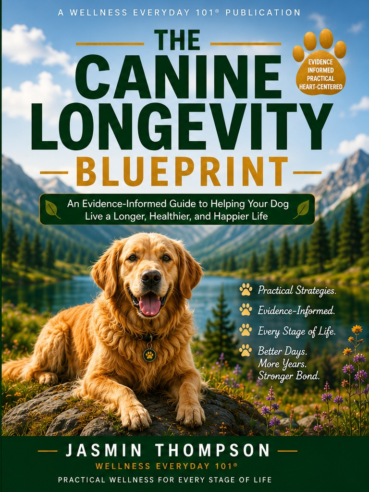

A Wellness Everyday 101® Publication
Practical wellness for every stage of life.
Wellness Everyday 101 provides practical, evidence-informed resources for pet wellness, healthy aging, and everyday wellbeing for individuals and families.
18 practical chaptersWellness trackersVeterinary-minded guidance
Wellness for every stage of life
Explore wellness for pets, older adults and everyday life
Wellness Everyday 101 brings together practical, evidence-informed guidance for pet wellness, healthy aging, and everyday wellbeing-helping individuals and families make healthier choices at every stage of life.
Healthy Aging
Practical resources to support mobility, nutrition, preventive care, independence, comfort, and quality of life as we age.
Everyday Wellness
Practical guidance for nutrition, movement, stress management, sleep, healthy routines, and personal wellbeing for everyday life.

The featured guide
The Canine Longevity Blueprint
An Evidence-Informed Guide to Helping Your Dog Live a Longer, Healthier, and Happier Life.
- Nutrition, superfoods, foods to avoid, and life-stage feeding
- Healthy weight, exercise, preventive veterinary care, and dental health
- Gut health, joint mobility, brain health, emotional wellness, and supplements
- Senior-dog planning, personalized wellness tools, and bonus printables
“The greatest gift we can give our dogs is not simply more years—but healthier, happier years filled with love, comfort, and purpose.”— The Canine Longevity Blueprint